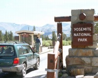
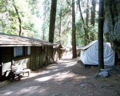
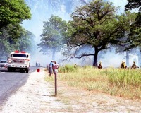
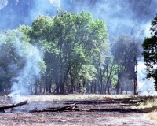
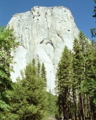
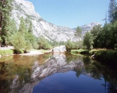
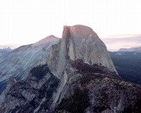

 |
ヨセミテNPの裏口。考えてみると裏から入園している場合が多い。裏口は、看板が質素です。 |
|
Curry
Villegeの様子。
右手が、テントキャビン、左手が風呂無しキャビン。他に、風呂ありキャビンあり。コストパフォーマンス的に、お勧めは風呂ありキャビン。 |
 |
 |
園内は、常にどこかで山火事が発生しています。消防士は消化するために来ているのではなく、類焼を防ぐために見守っています。 |
| 上の写真より24時間後です。ほぼ燃えきりました。未だ火がくすぶっています。 |
 |
|

|
ロッククライミングで有名なEl
Capitan
いつ見ても誰か登っています。
(写真をクリックしてみてください)
夕方には空中にテントを張るところも見れます。クライミングルートマップも売られていました。 |
Mirror
Lake
この時期は水が少ないということでしたが、充分美しい姿が見れました。 |
 |
 |
ヨセミテバレーから望む夕陽のHalf Dome。 |
| Gracier Pointから望む、夕陽のHalf Dome。 |
 |
メモ
園内はかなり広く、何日でも楽しめます。
ドライブで廻りながらざっと見るだけでも3日欲しい感じでした。
ロサンゼルスより観光道路として名高い州道395号線を使ってサンフランシスコまでドライブすることもできるので、比較的お手軽にいけるところでもあり、お勧めです。
宿泊に関しては、必ず園内に宿泊するべきです。理由は周りの街から遠いことと、園内の宿泊代が比較的手頃なことによります。予約作成は、手軽にネットで作れます。Curry
Villageが比較的予約が入りやすいようです。テントキャビンならほぼ確実です。
お勧めは、風呂付キャビン。風呂無しキャビンより$10くらい高値ですが、風呂があるだけでなく部屋が広いです。古い建物らしく、アンティークな感じが素敵でした。風呂無しキャビンはほんとに狭い掘立小屋です。テントキャビンは、熊対策で食べ物の持込が許可されていません。また、ビレッジは未舗装で、キャリーバックの持ち込みに苦労しました。この点でも風呂ありキャビンは比較的良いロケーションでした。
ビレッジ内で手に入らないものは取り合えず無いですが、消費するとわかっている水などはあらかじめ日数分買い込んでおくと経済的です。
双眼鏡必携。
一覧へ戻る
Written : 2004.04.04